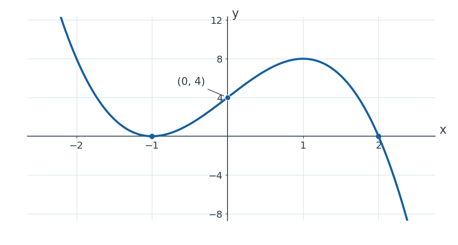
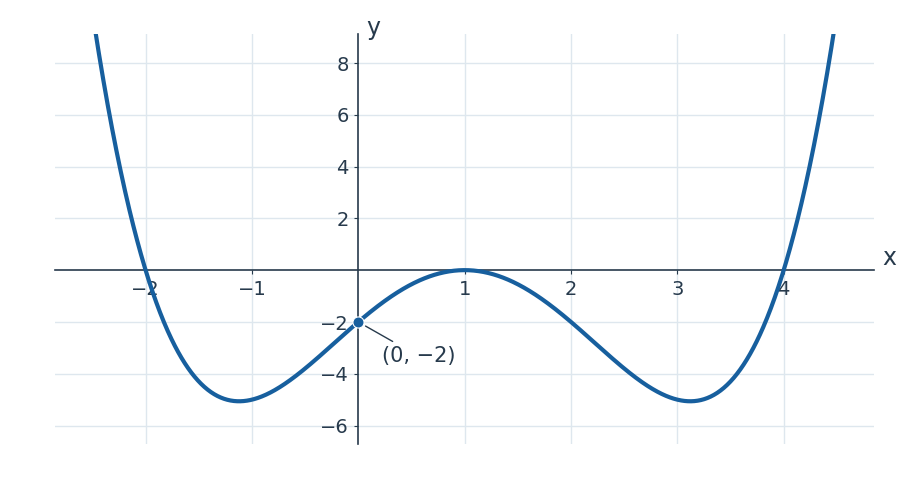

MATH 101 · College Algebra Lecture Notes
5.2–5.3 · Polynomial Functions and Their Graphs
Try each problem before revealing its solution. Double-click or double-tap the space below the problem, or focus it with Tab and press Enter or Space.
From powers to end behavior
Recognize power and polynomial functions
Classify each formula as a power function, a polynomial function, or both. For each polynomial, give its degree, leading term, and leading coefficient.
- 3x4
- 5x − 2x3 − 1
- x1/2
- 2x−1
- Both. The degree is 4, the leading term is 3x4, and the leading coefficient is 3.
- Polynomial only. The degree is 3, the leading term is −2x3, and the leading coefficient is −2. Look for the highest power even when the terms appear out of order.
- Power function only. The exponent is fractional.
- Power function only. The exponent is negative.
A power function has the form kxp for constants k and p. A polynomial function is a finite sum of terms whose exponents on x are nonnegative integers. A nonzero constant term has exponent 0. After combining like terms, the largest exponent with a nonzero coefficient is the degree. Its term and coefficient are the leading term and leading coefficient.
Predict the ends of a power function
For each of the four functions x4, −x4, x3, and −x3, decide whether the graph goes up or down on each end. Start by thinking about what happens when you plug in −10 and 10, then −100 and 100.
| Function | Left end as x → −∞ | Right end as x → ∞ |
|---|---|---|
| x4 | Up | Up |
| −x4 | Down | Down |
| x3 | Down | Up |
| −x3 | Up | Down |
For positive integer powers, even powers give the same direction at both ends and odd powers give opposite directions. The sign of the coefficient sets the right end. A positive coefficient sends it up and a negative coefficient sends it down.
Use the leading term to predict a polynomial’s ends
The same polynomial is written in expanded and factored form.
f(x) = −2x3 + 6x + 4 = −2(x + 1)2(x − 2)
Read the leading term from each form. In the factored form, do it without expanding the entire product. Then predict the end behavior. As a check, compare the size of the leading term to the sizes of the other terms at x = 10.
In expanded form, the highest-power term is −2x3. In factored form, multiplying the leading parts gives −2 · x2 · x = −2x3. The degree is 3 and the leading coefficient is −2.
At x = 10, the contributions are −2,000, 60, and 4. As |x| grows, the cubic term grows faster in size than either lower-degree term. It determines both ends. As x → −∞, f(x) → ∞. As x → ∞, f(x) → −∞.
Intercepts and behavior near a zero
Factor to find the intercepts
Find all x-intercepts and the y-intercept of g(x) = x3 − 4x + 3x2 − 12. Try factoring by grouping the cubic with the linear term and the quadratic with the constant term.
For the x-intercepts, solve g(x) = 0. Grouping gives x(x2 − 4) + 3(x2 − 4) = (x + 3)(x − 2)(x + 2).
A product is zero when one of its factors is zero. The zeros are −3, −2, and 2, so the x-intercepts are (−3, 0), (−2, 0), and (2, 0).
For the y-intercept, set x = 0. Since g(0) = −12, the point is (0, −12).
Use multiplicity to predict a crossing or a touch
Compare (x − 1)(x + 2), (x − 1)2(x + 2), and (x − 1)3(x + 2) near x = 1. For each, predict the sign just to the left and just to the right of 1. Which graphs cross the axis, which touch and turn, and which flatten as they cross?
Near 1, the factor x + 2 stays positive and close to 3. So the sign and shape near the zero come from the power of x − 1. That power is the zero’s multiplicity.
| Multiplicity | Signs from left to right | Graph at x = 1 |
|---|---|---|
| 1 | −, + | Crosses like a line |
| 2 | +, + | Touches and turns like a parabola |
| 3 | −, + | Flattens as it crosses, like a cubic |
In general, factor out (x − r)m completely at a zero r. The remaining factor approaches a nonzero value near r, so the graph behaves locally like a constant times (x − r)m. Odd multiplicities give crossings, and even multiplicities give touches.
From a formula to a graph
Use intercepts, signs, and ends in one sketch
Return to f(x) = −2(x + 1)2(x − 2). Mark both intercepts on the x-axis and the intercept on the y-axis. Decide where the graph is above or below the x-axis, then draw a smooth sketch with the correct end behavior.
- The left end rises and the right end falls because the leading term is −2x3.
- The graph touches at (−1, 0), where the multiplicity is 2, and crosses at (2, 0), where the multiplicity is 1. The y-intercept is (0, 4).
- Away from its zeros, (x + 1)2 is positive. The factor −2(x − 2) is positive to the left of 2 and negative to the right of 2. The curve is above the axis on both sides of −1, then crosses below at 2.

Use degree to bound the number of turning points
Compare u(x) = x4 and v(x) = (x2 − 1)2. Both have degree 4 and both ends rise. Sketch each one. For v, start by plotting its zeros and the point at x = 0. Where does each graph switch between increasing and decreasing?
The graph of u has one turning point, a minimum at (0, 0). The graph of v has minima at (−1, 0) and (1, 0) and a local maximum at (0, 1). Between −1 and 1, v(x) = (1 − x2)2 rises toward 1 as x approaches 0, then falls back to 0 as x approaches 1. Outside those zeros the graph rises toward both ends.
A polynomial of degree n ≥ 1 has at most n − 1 turning points. Here v reaches the quartic bound of three. In the previous problem, the cubic sketch has two turns, the maximum for degree 3.
From a graph to a formula
Build a least-degree polynomial from a graph
Use the intercepts, the behavior at each zero, and the marked point to write a polynomial of least possible degree in factored form.

The crossings at −2 and 4 give factors x + 2 and x − 4. The touch at 1 requires an even multiplicity, so use the smallest choice, 2. Start with p(x) = a(x + 2)(x − 1)2(x − 4).
At x = 0, the marked point gives −2 = a(2)(1)(−4) = −8a, so a = 1/4. The least-degree polynomial is p(x) = (1/4)(x + 2)(x − 1)2(x − 4). Its degree is 4 and its positive leading coefficient agrees with the two rising ends.
Locating a zero by a change of sign
Use the Intermediate Value Theorem
For q(x) = x3 + x − 1, use q(0) and q(1) to show that there is a zero between 0 and 1. Then evaluate q(1/2) to narrow down the interval.
q(0) = −1 and q(1) = 1. A polynomial is continuous, so the graph passes through every height between −1 and 1 somewhere between the two inputs. In particular, it reaches height 0.
At the midpoint, q(1/2) = 1/8 + 1/2 − 1 = −3/8. The endpoint signs are opposite on the interval from 1/2 to 1, so the Intermediate Value Theorem guarantees at least one zero in that smaller interval. The same argument works whenever a continuous function takes opposite signs at two inputs.
Mixed practice
Sketch a polynomial with a flattened crossing
Sketch h(x) = (x + 2)3(x − 1)2. Give the degree, leading term, end behavior, intercepts, behavior at each zero, and maximum possible number of turning points for its degree. Use the factors to decide the sign on each of the three intervals separated by the zeros.
The leading term is x5, so the left end falls, the right end rises, and degree 5 allows at most four turns.
The graph crosses with flattening at (−2, 0) because the multiplicity is 3. It touches and turns at (1, 0) because the multiplicity is 2. The y-intercept is (0, 8). Away from its zeros, the square factor is positive, so the cubic factor determines the sign. The graph is below the axis to the left of −2 and above the axis between −2 and 1 and to the right of 1.
For the sketch, bring the left end up to the flattened crossing at −2. Draw a hump between −2 and 1 that contains (0, 8), then touch the axis at 1 and rise to the right.